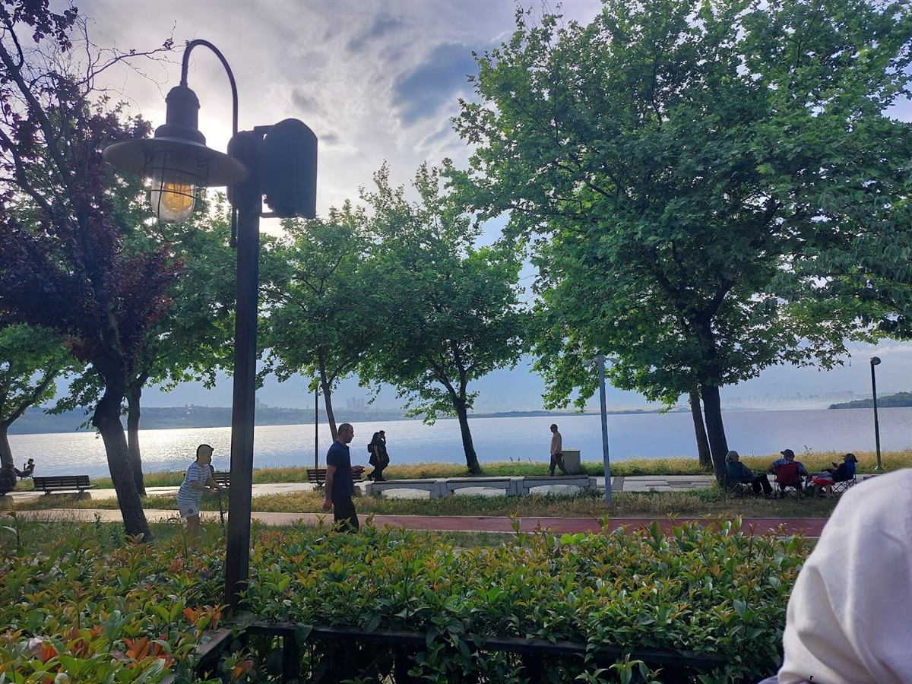

Uzun bir kahvaltı.
Serpme kahvaltı, mıhlama, menemen ve sahanda yumurta çeşitleri.
KÜÇÜKÇEKMECE GÖLÜ KIYISINDA
Bir kahvaltı sofrası, uzayan bir sohbet.
Mimossa’da güne kendinize zaman ayırarak başlayın.

MİMOSSA’DA BİR GÜN
Sabah kahvaltısından akşam yemeğine, günün her saatinde buluşmak için bir sebep var.
Ağaçların altında bir masa seçin. İster kahvenizle kısa bir mola verin, ister dostlarınızla sofrayı paylaşın.
Mimossa’dan kareler ↗GOOGLE YORUMLARI
“Gerçekten her yönüyle eksiksiz bir mekan.”
Zakaria Kharrat
Google yorumunu aç ↗“Serpme kahvaltısı oldukça fazla ve besleyici çayları taze ve benim favorim pişiler oldu.”
Sezer HAYAT
Google yorumunu aç ↗Google yorumlarından seçilmiş kısa alıntılar. Puan ve yorum sayısı kontrol tarihindeki kaydı yansıtır.
Her gün 08.00–01.00
0212 541 38 08Rezervasyon ve doğum günü etkinlikleri hakkında bilgi almak için bizi arayabilirsiniz.
@mimossacafe ↗